thank you for this blog. i just spent way too long in your uws tag and i feel like that good kind of upset when you remember exactly what stores and places used to be where, even if a majority of the photos are from before i was born. if you ever did any posts for 110th st and morningside heights pre-gentrification that would be amazing (for me personally anyway). thank you again!
Glad you’re having a good, nostalgic time! Thanks!
We take a brief break from NYC nostalgia to show you some NYC truth.

oldnewyorklandia:
Willy Spiller, Photographs from the New York Underground, 1977 – 1984.

kvetchlandia:
Bedřich Grünzweig Benches, Central park, New York City 1969
At the bandshell!
2nd Ave at 58th St, 1979
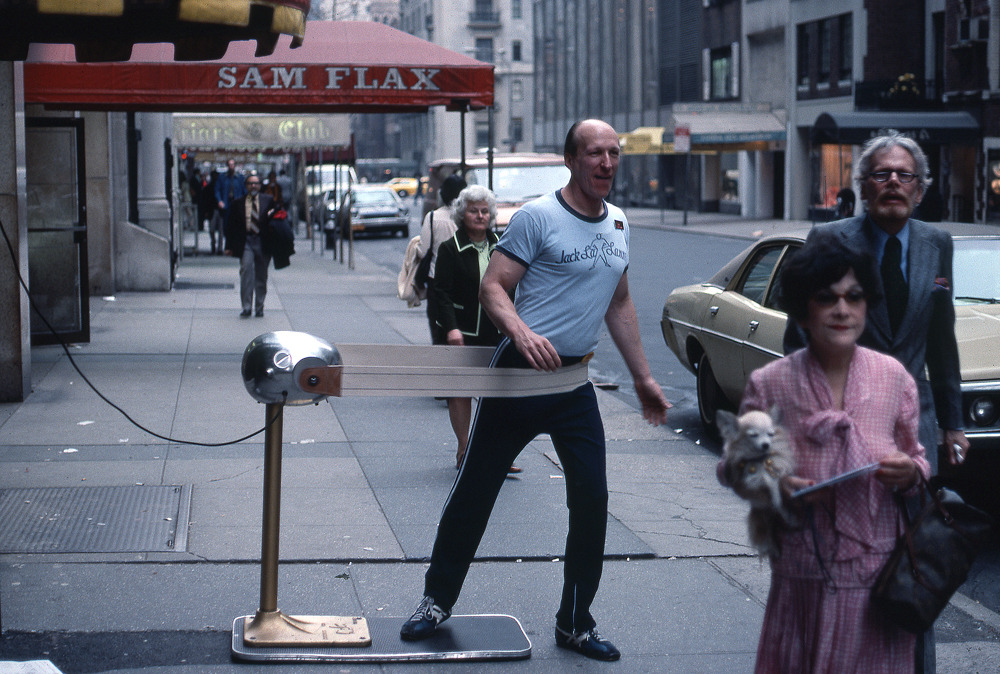
Workin’ out on 55th Street, 1977
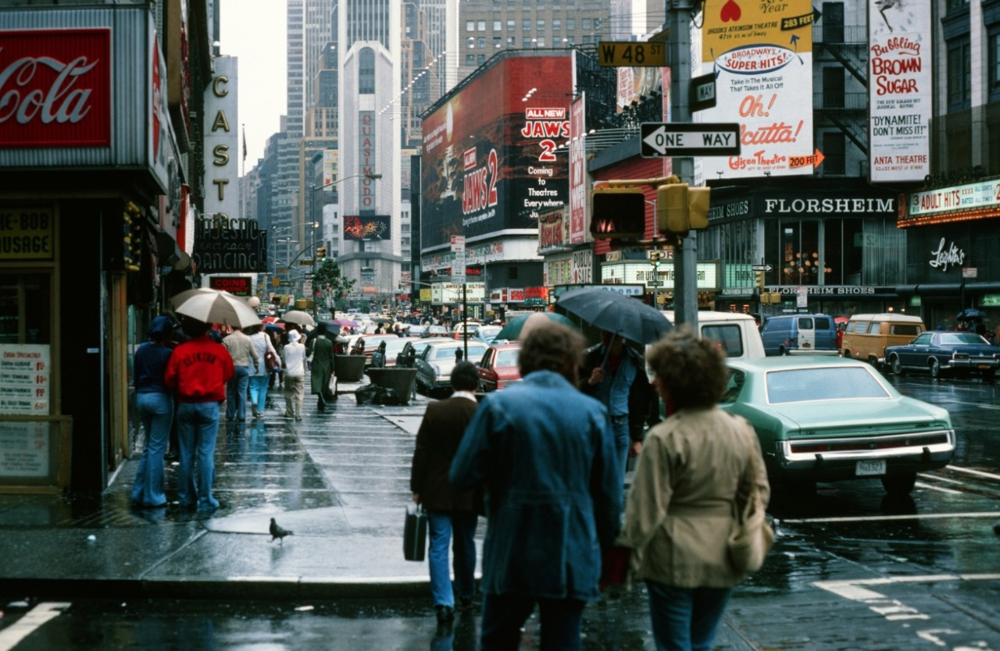
48th and Broadway, 1978
route22ny:
Eatery at the northeast corner of Essex and Delancey Streets in lower Manhattan. Photo taken in 1980 by Thomas Frederick Arndt.
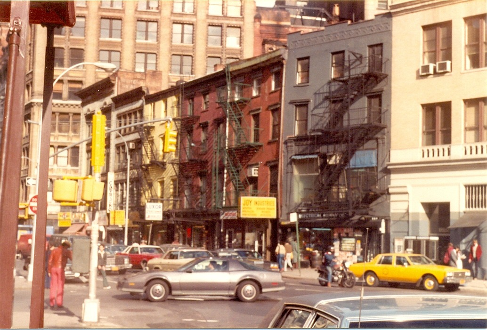
Broadway and 17th, 1982

nyc-subway-graffiti:
ZEPHYR action shot for the “Heroin Kills” train with DONDI. 1981.
Found this high res shot.
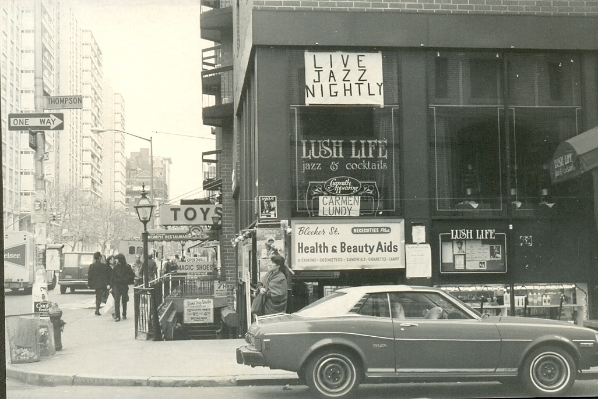
Thompson and Bleecker, 1983
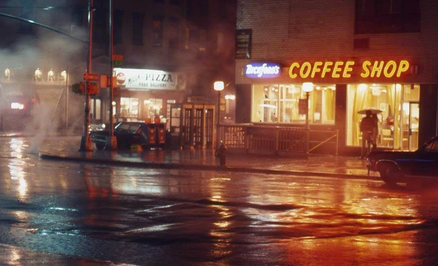
14th and 7th Ave, 1972
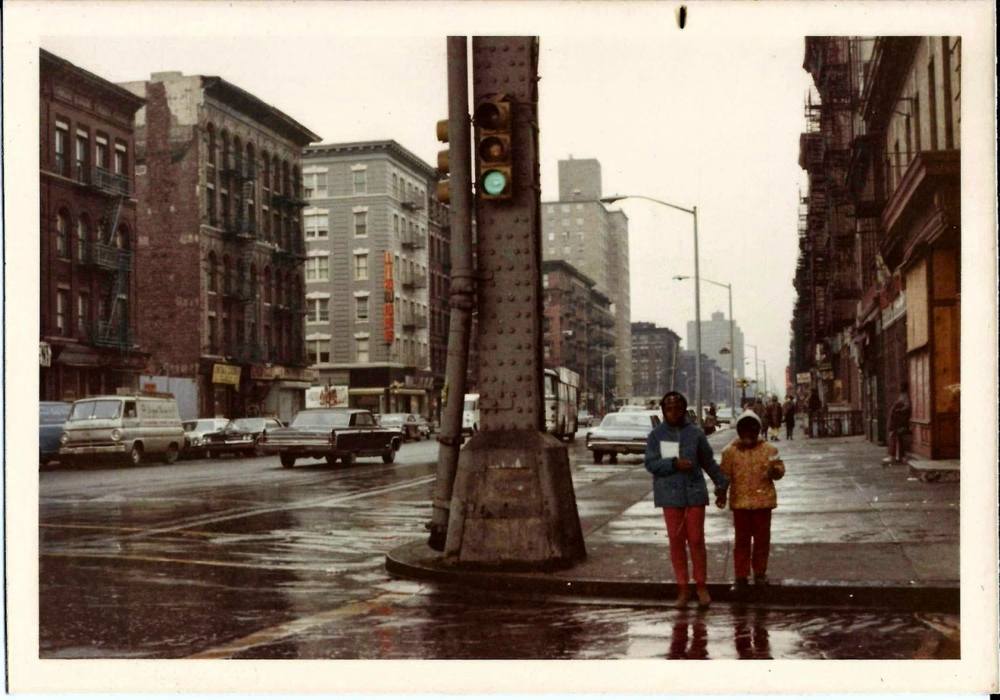
155th and Frederick Douglass Blvd, 1970
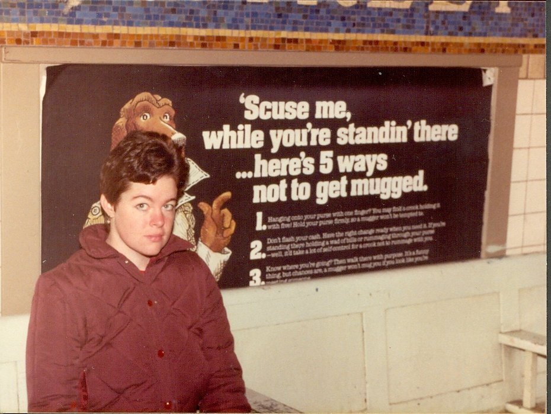
5 ways not to get mugged
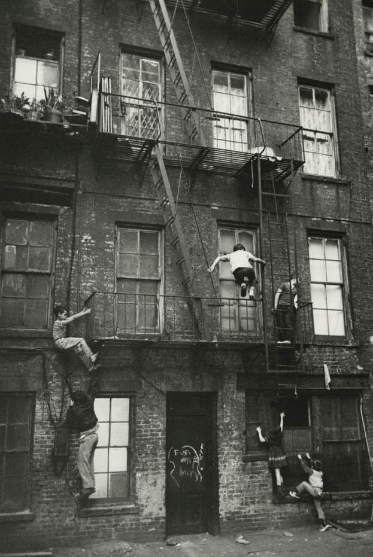
kvetchlandia:
William Carter Kids Playing, Lower East Side, New York City 1963
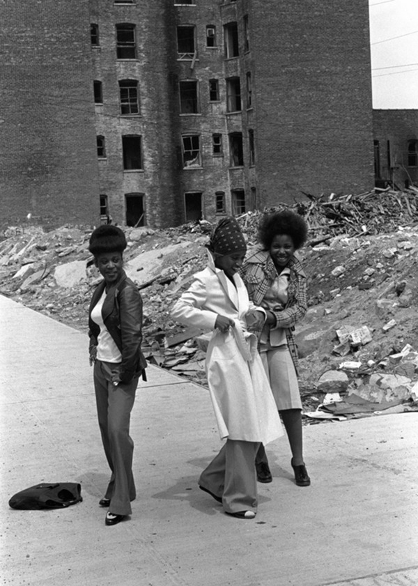
jonasgrossmann:
mel rosenthal… south bronx, 1970s @ duke
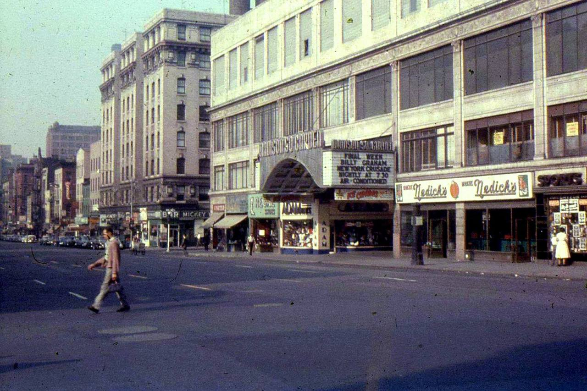
route22ny:
Eighth Avenue looking toward 49th Street, including Madison Square Garden III, as seen sometime during the 1950s. Photo from the collection of Al Ponte.
Squalor
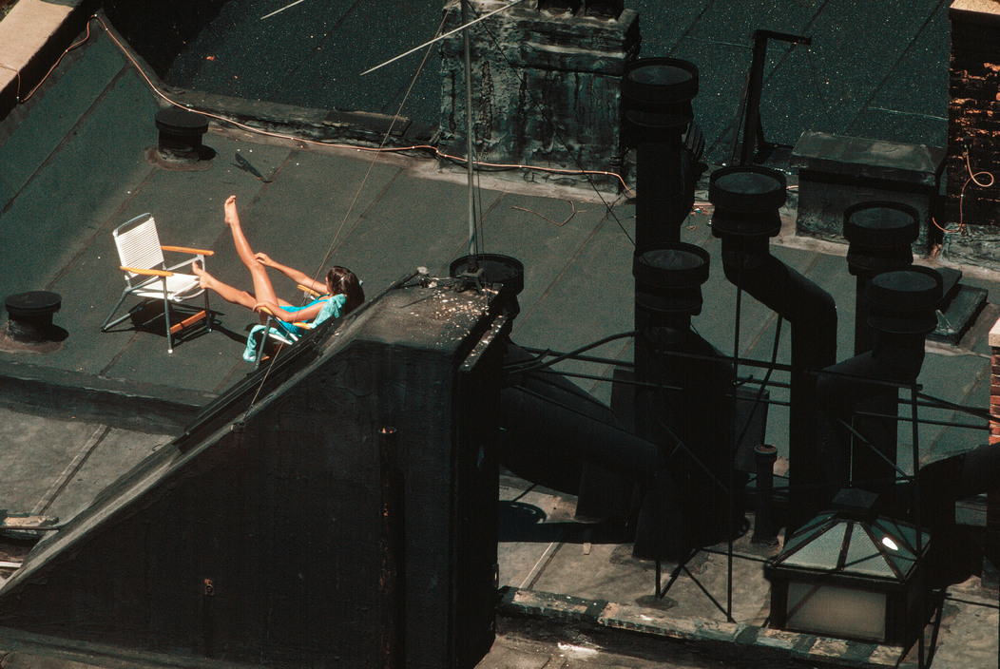
Tar Beach, 1980s
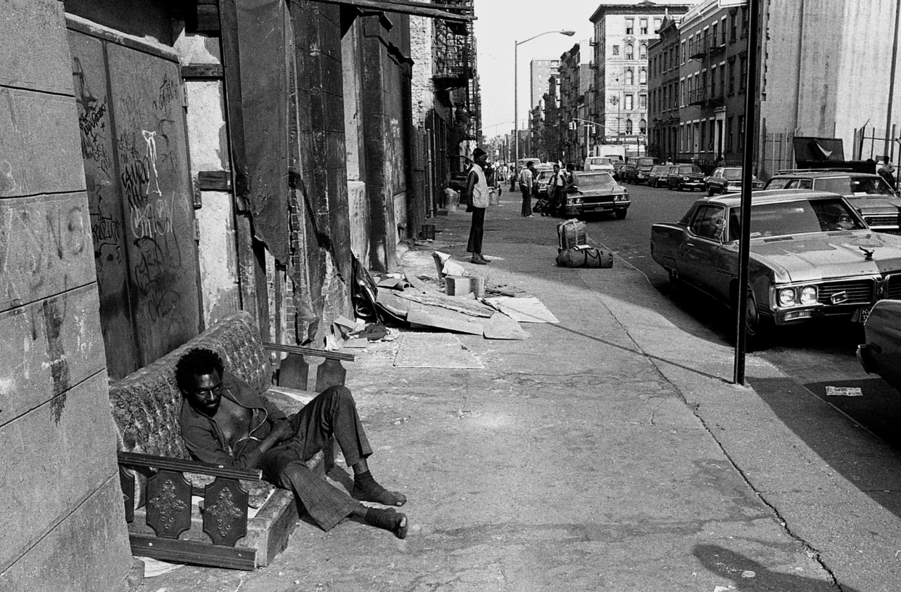
1981. Anywhere, NYC.

Here’s a very sad before/after

Payphones on 5th Ave, 1983

jonasgrossmann:
christopher morris… new york, 1981 @ 1981
You can’t read that map. Stop trying.

jonasgrossmann:
christopher morris… new york, 1981 @ 1981

44th Street, 1979

Lower Manhattan in 1980

Near the UN in 1979

Snow on Columbus Ave, 1979 (at 73rd Street)
2othcentury:
New York, 1981 © Christopher Morris
2othcentury:
72nd and Broadway, Manhattan, New York, 1970s. Photo by Ira Gallen.

All aboard the Ralph Kramden express!
Alexander’s in Queens
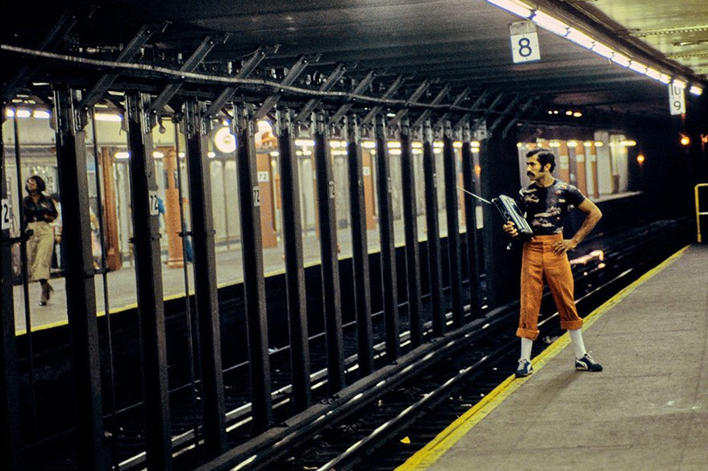
Fashion plate
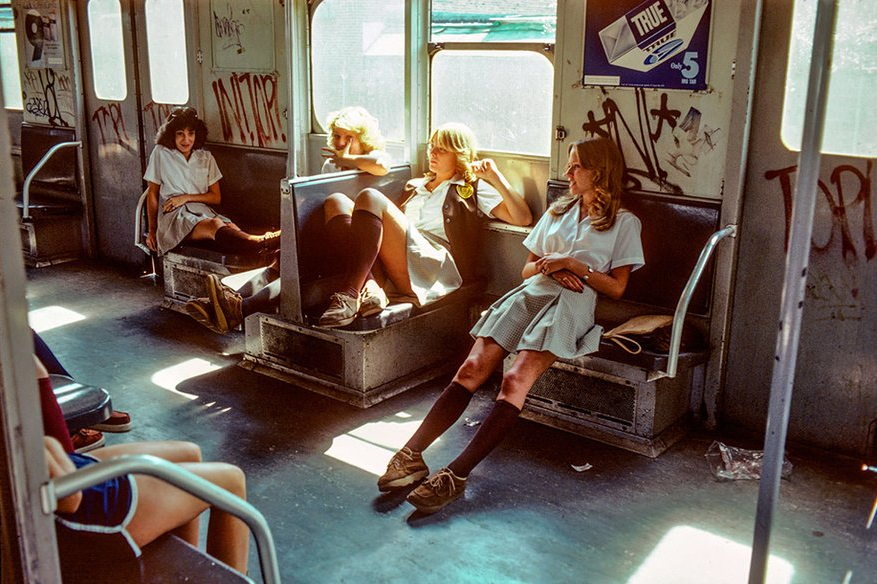
On the way to school. Or escaping from prison.